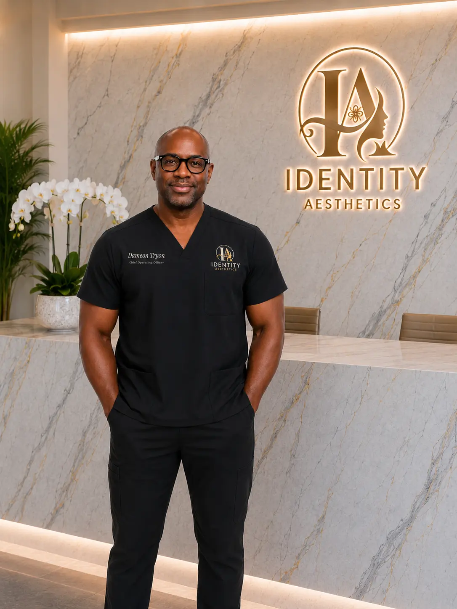

Vision, discipline and consistent action.
Chief Executive Officer
Dameon Tryon serves as Chief Executive Officer of Identity Aesthetics, where he provides the strategic and operational leadership required to move the organization forward. His responsibilities span business development, strategic planning, franchising, pharmaceutical operations, information technology, and marketing and advertising.
With a hands-on leadership style and a strong focus on execution, Dameon works to ensure that the clinical team has the systems, resources, technology, and organizational support necessary to deliver an exceptional patient experience. He helps guide the development of new services, evaluates opportunities for responsible growth, coordinates key business relationships, and strengthens the operational foundation supporting each Identity Aesthetics location.
Dameon also oversees the practice’s technology and digital infrastructure, helping connect patient communications, website development, clinical operations, and business systems. His involvement in marketing and advertising focuses on communicating the Identity Aesthetics difference clearly, building lasting brand recognition, and creating meaningful connections with the communities the practice serves.
In pharmaceutical operations, Dameon supports medication sourcing, pharmacy relationships, supply-chain coordination, operational compliance, and the development of dependable systems that help the clinical team provide safe, organized, and patient-focused care. He approaches this responsibility with close attention to quality, accountability, transparency, and the importance of working with appropriately qualified partners.
Whether he is developing a new program, solving an operational challenge, improving technology, directing a marketing initiative, or planning the organization’s long-term expansion, Dameon is driven by persistence and a belief that meaningful goals can be achieved through vision, discipline, and consistent action.
At the heart of that determination is the encouragement of his father (pop pop), whose motivating words continue to guide him:
“YOU CAN DO IT, D!”
That simple but powerful statement has become a lasting source of motivation—reminding Dameon to approach every challenge with confidence, remain committed when the path becomes difficult, and continue building a stronger future for Identity Aesthetics, its team, and the patients it serves.
Leadership Focus
- Business development
- Strategic planning
- Franchising
- Pharmaceutical operations
- Information technology
- Marketing and advertising
Building a stronger future for Identity Aesthetics.
Learn more about our organization, our standards and the team supporting every patient experience.